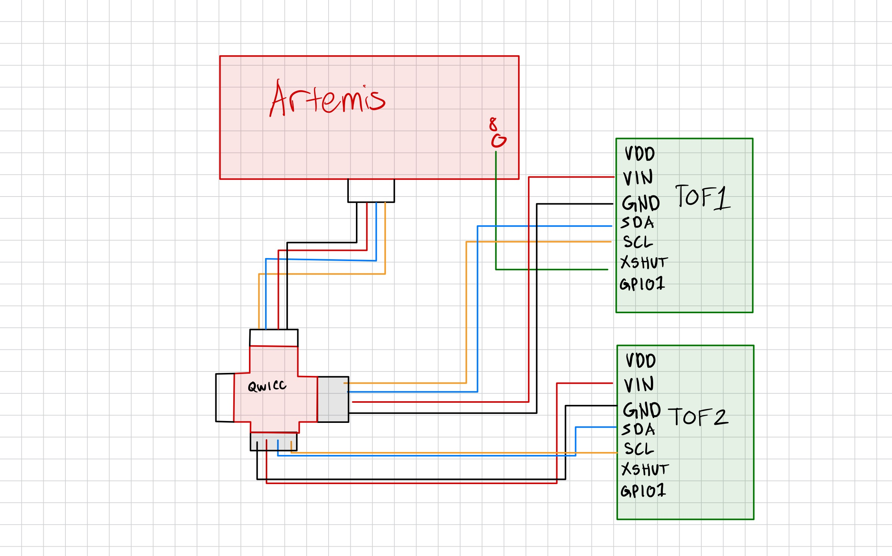
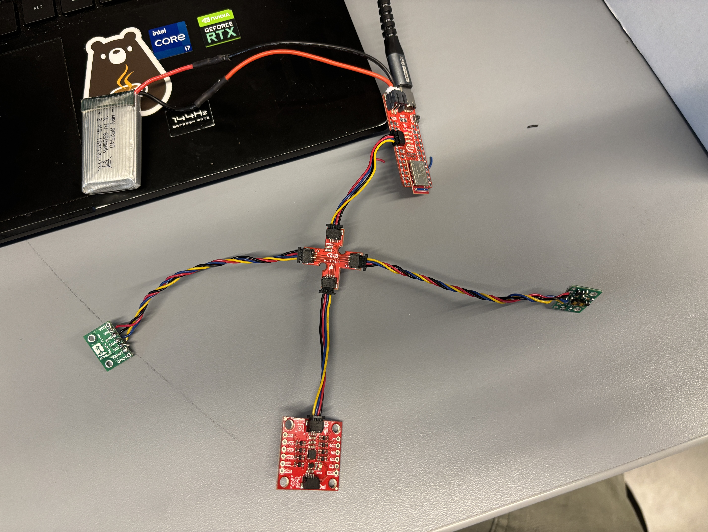
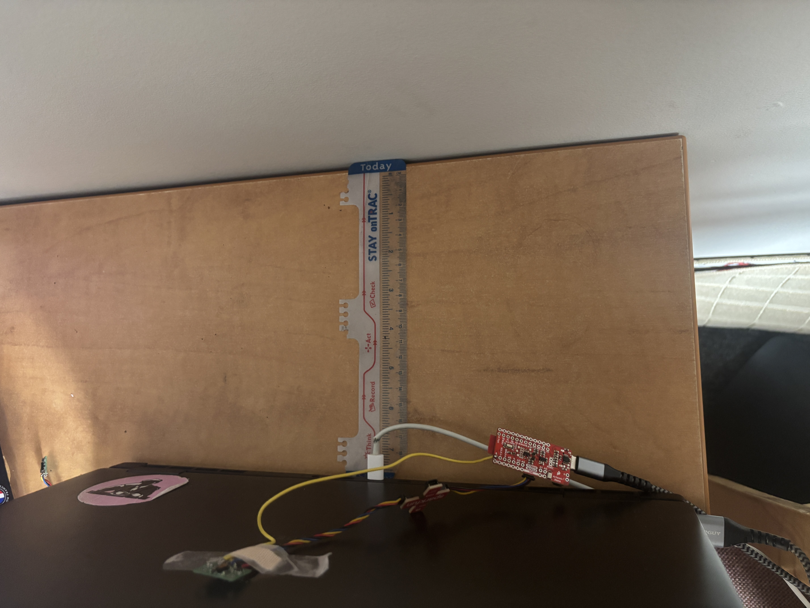
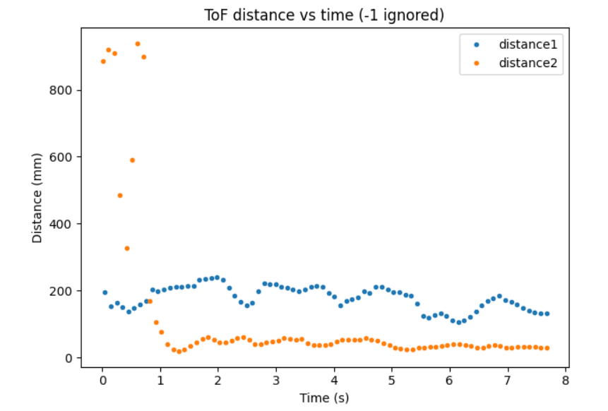
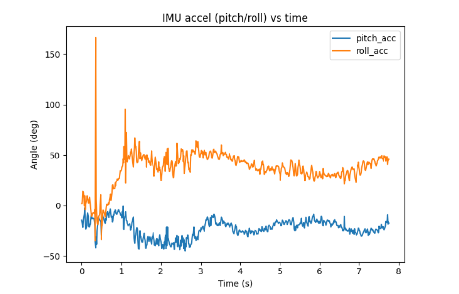
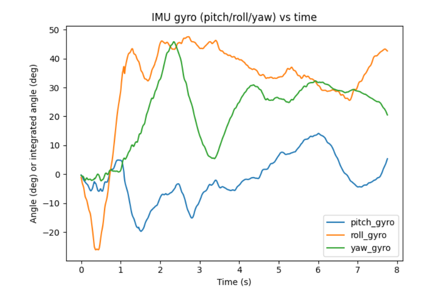

ECE 4160 – Fast Robots
The purpose of this lab was to set up the time of flight sensors.
In this lab we used two time of flight sensors. Since they both have the same address (0x29), I had to change the address of one of them. I did this by soldering the XSHUT pin to a GPIO pin on the artemis for one of the sensors, and then setting it low to disable the sensor, changing the address of the other sensor, and then re-enabling the first sensor. For placement, I plan to put one sensor on the front and one sensor on the side. The sensor on the front will be the most important as it will prevent the car from running into obstacles that are in front of its path. The sensor on the side will help the car to run along side and obtacle like a wall and maintain a certain distance from it. With this setup, the car will not be able to detect obstacles coming from behind it (we cannot safely back up all the time), as well as movning obstacles that are coming towards the car from the side without the sensor.

To start of the lab, we set up the artemis board to be powered with a 650mAh batter as opposed to being powered by the computer through the USB. Since the connector to my battery wasn't compatible with the artemis, I had to cut the wires of my battery and solder it to a connector that could plug into the artemis. To test that the battery was working to power the artemis, then unplugged the USB cabel (leaving the battery as the only power source) and sent over a BLE command from my computer to artemis and back to the computer.

An image of the final setup (mainly shown for the battery connection).
I then worked on setting up the TOF sensors. I first installed the SparkFun VL53L1X 4m laser distance sensor library. After this I took two of the QWIIC cables in my kit and cut of one side of them. Then for each wire I took one of the TOF sensors and soldered the cut end into the TOF pins. Finally for one of the TOF sensors I soldered the XSHUT pin to a GPIO pin on the artemis so that I could change its address.
Next, I plugged in one of the TOF sensors to the QWIIC breakout board and ran the Example05_wire_I2C example code. The code printed address 29 for the QWICC breakout board outlet that had the TOF sensor plugged in and outputed that none of the other outlets/ports had a device plugged in as expected.
Scanning... (port: 0x10000E9C), time (ms): 412506 0x29 detected
Scanning... (port: 0x10001190), time (ms): 412545 No device detected!
I then had to decide on whether to use the short or long distance mode for the TOF sensors. The short distance mode is optimal up to 1.3m while the long distance mode can go up to 4m. Since the stunts will mainly require me to go a very close distance to walls, I decided that the short distance mode would be more suitable for my applications since it would give more accurate readings at close distances. I then used the Example1_ReadDistance example code to test the range, accuracy, repeatability, and ranging time of my TOF sensor. I used the following setup for testing the sensor. I tested it at various distances from the wall and recorded multiple different readings at each distance to get a semse of the performacne of the sensor.

Next, I set plugged in the second TOF sensor. In order to get readings from both at the same time, I had to use the following code to shut of the sensor that had the XSHUT connected to the board. While it was shut of, I then changed the address of the ofther sensor. Finally, I re-enabled the sensor that was turned off. This allowed me to get readings from both of the sensors at the same time.
#define SHUTDOWN_PIN 8
#define INTERRUPT_PIN 3
SFEVL53L1X distance_sensor_1(Wire, SHUTDOWN_PIN);
SFEVL53L1X distance_sensor_2;
void setup(void)
{
Serial.begin(115200);
pinMode(SHUTDOWN_PIN, OUTPUT);
digitalWrite(SHUTDOWN_PIN, LOW);
Wire.begin();
distance_sensor_2.init();
distance_sensor_2.setI2CAddress(0x30);
if (distance_sensor_2.begin() != 0) //Begin returns 0 on a good init
{
Serial.println("2nd Sensor failed to begin. Please check wiring. Freezing...");
while (1)
;
}
Serial.println("2nd Sensor online!");
digitalWrite(SHUTDOWN_PIN, HIGH);
if (distance_sensor_1.begin() != 0) {
Serial.println("1st Sensor failed to begin. Please check wiring. Freezing...");
while (1)
;
}
Serial.println("1st Sensor online!");
distance_sensor_1.setDistanceModeShort();
distance_sensor_2.setDistanceModeShort();
Serial.print("D1 Sensor Address: ");
Serial.print(distance_sensor_1.getI2CAddress(), HEX);
Serial.print("D2 Sensor Address: ");
Serial.print(distance_sensor_2.getI2CAddress(), HEX);
}
void loop(void)
{
distance_sensor_1.startRanging();
while (!distance_sensor_1.checkForDataReady())
{
delay(1);
}
int distance1 = distance_sensor_1.getDistance(); distance_sensor_1.clearInterrupt();
distance_sensor_1.stopRanging();
distance_sensor_2.startRanging();
while (!distance_sensor_2.checkForDataReady())
{
delay(1);
}
int distance2 = distance_sensor_2.getDistance(); distance_sensor_2.clearInterrupt();
distance_sensor_2.stopRanging();
Serial.print("Distance1(mm): ");
Serial.print(distance1);
Serial.print("Distance2(mm): ");
Serial.print(distance2);
Serial.println();
}
While the video struggles to focus on the TOF sensors and the output at the same time, we see that as I cover one of the TOF sensors it records very small values while the other sensor (which is not covered) records much larger values.
Instead of waiting for the TOF sensors to have ready values, I changed the code to run throgh each loop without waiting. If a TOF sensor had a ready values, this was added to the arrary/printed. If no value was ready at the time, then a value of -1 was added to the array/printed. This way, I could run the code without having to wait for the TOF sensors to have ready values and not have the code hang while waiting for them. I also printed the clock to Serial at every iteration of the loop and incremented a counter variable to keep track of how many loops had run. This allowed me to see how often the TOF sensors' data was ready.
#define SHUTDOWN_PIN 8
#define INTERRUPT_PIN 3
SFEVL53L1X distance_sensor_1(Wire, SHUTDOWN_PIN);
SFEVL53L1X distance_sensor_2;
int counter = 0;
int counterA = 0;
int counterB = 0;
int total_t = 0;
void setup(void)
{
Serial.begin(115200);
pinMode(SHUTDOWN_PIN, OUTPUT);
digitalWrite(SHUTDOWN_PIN, LOW);
Wire.begin();
distance_sensor_2.init();
distance_sensor_2.setI2CAddress(0x30);
if (distance_sensor_2.begin() != 0)
{
Serial.println("2nd Sensor failed to begin. Please check wiring. Freezing...");
while (1)
;
}
Serial.println("2nd Sensor online!");
digitalWrite(SHUTDOWN_PIN, HIGH);
if (distance_sensor_1.begin() != 0) {
Serial.println("1st Sensor failed to begin. Please check wiring. Freezing...");
while (1)
;
}
Serial.println("1st Sensor online!");
distance_sensor_1.setDistanceModeShort();
distance_sensor_2.setDistanceModeShort();
Serial.print("D1 Sensor Address: ");
Serial.print(distance_sensor_1.getI2CAddress(), HEX);
Serial.print("D2 Sensor Address: ");
Serial.print(distance_sensor_2.getI2CAddress(), HEX);
distance_sensor_1.startRanging();
distance_sensor_2.startRanging();
}
void loop(void)
{
int t = millis();
if (t < 3000) {
int distance1;
if (distance_sensor_1.checkForDataReady()) {
distance1 = distance_sensor_1.getDistance();
counterA += 1;
distance_sensor_1.clearInterrupt();
} else {
distance1 = -1;
}
int distance2;
if (distance_sensor_2.checkForDataReady()) {
distance2 = distance_sensor_2.getDistance();
counterB += 1;
distance_sensor_2.clearInterrupt();
} else {
distance2 = -1;
}
Serial.print("Millis: ");
Serial.print(t);
Serial.print(" Distance1(mm): ");
Serial.print(distance1);
Serial.print(" Distance2(mm): ");
Serial.print(distance2);
counter += 1;
Serial.println();
} else {
total_t = t;
Serial.println(counter);
Serial.println(total_t);
Serial.println(counter / total_t);
Serial.println(counterA);
Serial.println(counterB);
delay(10000);
}
}
325 loops / 3002 ms
325 loops / 3.002 seconds = 108.3 loops / second
26 sensor readings for sensor1 and sensor2
26 / 3.002 = 8.66 readings per second
Based on this information, it was clear that the bottle neck or limiting factor was how fast the sensor can read/record new information. The speed at which the TOF sensors had a new value ready was significantly slower than the speed of the overall loop.
Finally, I edited my BLE code to be able to record both TOF and IMU data. I used the same method of storing data in arrays and recording/sending the data over based on BLE commands from the computer. I then recorded data for a few seconds:



My main challenge when navigating this lab was having issues with the creating the code to properly use XSHUT to change the address of the sensor. I also initially delt with some bugs when sending over BLE commands after incorporating TOF data into my existing code.
I referenced henrycc24's website during this lab.